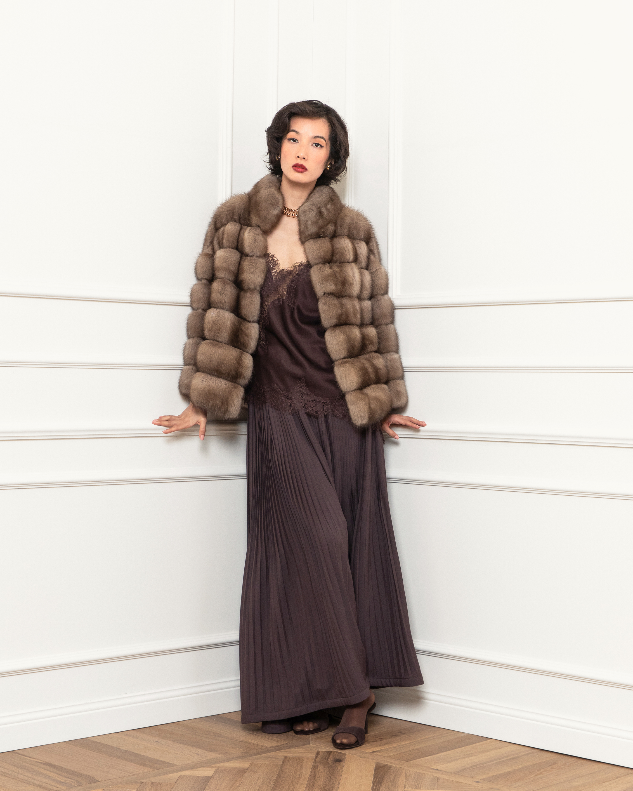
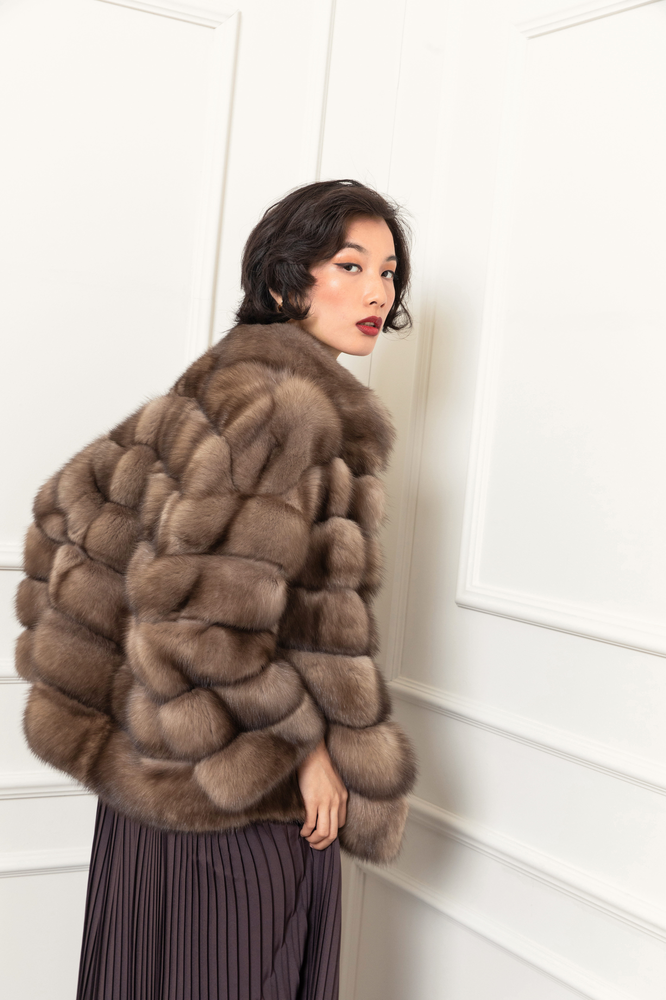

Zibellino · Made in Italy
Cod. FG2407FDOR
Lo zibellino russo è la pelliccia più pregiata e rara esistente. Pelo denso, morbidissimo, con riflessi scuri e luminosi che cambiano a seconda della luce. Un cappotto in zibellino Fabio Gavazzi è un investimento generazionale: un capo che migliora con gli anni e si tramanda. Realizzato con le migliori pelli selezionate alle aste internazionali.
COLLEZIONE